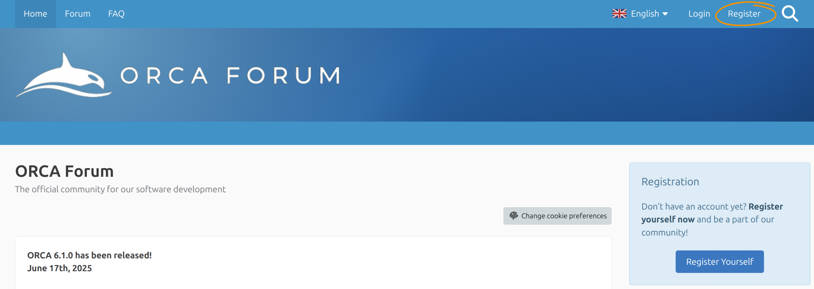

安装 ORCA¶
ORCA 以预编译包的形式发布，适用于 Linux、macOS 和 Windows。
本教程介绍如何选择正确的 ORCA 6.1 安装包并进行安装、
使 orca 命令可用，以及通过一个小计算验证安装是否成功。
重要 我们通常建议使用最新可用版本的 ORCA。请定期检查错误修复版本（bug-fix release），并相应更新您的 ORCA 安装。
开始之前¶
您需要：
- 受支持的 Linux、macOS 或 Windows 系统；
- 在您的用户账户或所选安装目录中安装软件的权限；
- Linux 或 macOS 上的终端，或 Windows 上的 PowerShell/命令提示符。
不需要单独的图形用户界面（graphical user interface）。ORCA 本身是一个命令行程序。
注册下载¶
ORCA 可以从 ORCA Forum（学术用途）或 FACCTs 下载区（学术和商业用途）下载。这两种方式都需要创建账户并同意相应的许可协议。下文我们将以 ORCA Forum 为例介绍安装过程。

ORCA Forum 注册。
下载 ORCA¶
在 ORCA Forum 注册并登录后，打开 Filebase，选择符合您基础设施要求的最新 ORCA 版本发行版。

ORCA Forum Filebase（下载部分）。
在 Linux 和 macOS 上，安装程序通常是 .run 文件。在 Windows 上，安装程序包含在 .zip 压缩包中。
注意 如果您只是想试用 ORCA 或运行串行计算，请从标准安装开始。并行计算需要额外的组件， 相关内容见并行运行计算。
安装 ORCA¶
请选择适合您操作系统的说明。
Linux¶
- 打开终端并切换到包含已下载安装程序的目录，例如：
ORCA_INSTALLER.run 替换为实际文件名，并将其设置为可执行：
3. 运行安装程序：
4. 按照安装程序的指示操作。
5. 关闭终端并打开一个新的终端，以便加载更新后的环境变量。
命令行安装程序还支持以下可选模式：
-i Set the installation path interactively
-p PATH Install into PATH
-x Extract the package without installing it
这些选项需在 -- 之后传入。例如：
注意
-x主要用于托管系统、集群、容器或其他必须手动配置环境的情况。
macOS¶
- 打开终端（Terminal）并切换到包含已下载安装程序的目录：
ORCA_INSTALLER.run 替换为实际文件名，并将其设置为可执行：
3. 运行安装程序：
4. 按照安装程序的指示操作，然后关闭终端并打开一个新窗口。
下载之前，可以用以下命令检查处理器架构：
当提供多个 macOS 架构时，请选择与之匹配的 ORCA 安装包。
Windows¶
- 解压下载的 ORCA
.zip压缩包。 - 打开解压后的目录并启动 ORCA
.exe安装程序。 - 按照安装向导操作。
-
根据您的预期用途选择安装类型：
-
典型安装串行组件。
- 自定义或完全安装还可以选择并行组件。
- 完成安装并打开一个新的 PowerShell 或命令提示符窗口。
安装程序会配置所需的环境变量，包括将 ORCA 安装目录加入 PATH。
注意 一些专门的 AUTOCI 可执行文件以单独的压缩包形式发布。仅当您的计算需要这些模块时， 才将它们解压到 ORCA 安装目录中。请使串行或并行压缩包与您所选的 ORCA 安装相匹配。
检查 ORCA 是否在 PATH 中¶
在 Linux 或 macOS 上，运行：
在 Windows 上，运行：
该命令应打印出 ORCA 可执行文件的完整路径。
如果没有打印出路径，请先关闭终端并打开一个新的终端。安装程序所做的环境更改只对新启动的终端会话可见。
手动设置 PATH¶
只有在您使用了仅解压的安装包，或安装程序未更新 PATH 时，才需要本节内容。
在 Linux 或 macOS 上，用以下命令临时添加 ORCA 目录：
要使更改永久生效，请将同一行添加到您的 shell 所使用的启动文件中（Bash 通常是 ~/.bashrc，Zsh 是 ~/.zshrc），然后打开一个新终端。
在 Windows 上，通过环境变量将 ORCA 安装目录添加到用户或系统的 Path 中，然后打开一个新的 PowerShell 或命令提示符窗口。
重要 不要混用来自不同 ORCA 或 MPI 安装的可执行文件和库。对于并行计算，MPI 运行时必须与所选 ORCA 安装包要求的版本匹配。
运行安装测试¶
请在单独的工作目录中运行计算，而不要在 ORCA 安装目录内运行。
创建一个测试目录并进入它。
Linux 或 macOS：
Windows PowerShell：
New-Item -ItemType Directory -Force "$HOME\orca_install_test"
Set-Location "$HOME\orca_install_test"
创建一个名为 water.inp 的文本文件，内容如下：
3 structure O 0.0000 0.0000 0.0626 H -0.7920 0.0000 -0.4973 H 0.7920 0.0000 -0.4973
! HF DEF2-SVP SP * xyz 0 1 O 0.0000 0.0000 0.0626 H -0.7920 0.0000 -0.4973 H 0.7920 0.0000 -0.4973 *
运行 ORCA 并将输出重定向到 water.out：
在 Linux 或 macOS 上，用以下命令检查结束消息：
在 Windows 上，使用：
成功的计算包含：
现在您可以继续阅读Hello water！您的第一个 ORCA 计算，其中更详细地解释了输入和输出。
可选：准备并行计算¶
串行计算能够运行，并不能证明并行环境配置正确。
在并行运行 ORCA 之前：
- 确定所下载 ORCA 包所需的 MPI 实现和版本；
- 安装或加载匹配的 MPI 运行时；
- 验证预期的
mpirun或等效运行时在PATH中被优先找到； - 按照并行运行计算进行操作。
重要 不要用手动构造的命令（如
mpirun -np 4 orca ...）启动 ORCA。ORCA 会根据输入中的并行设置启动所需的工作进程。
可选：xtb 支持¶
许多 ORCA 工作流可以调用外部的 xtb 可执行文件。大多数用户应使用其 ORCA 安装包中附带的 xtb 组件（如果有）。
只有当某个工作流需要特定的 xtb 版本时，才单独安装或替换 xtb。在这种情况下，请按照
ORCA 安装章节和 xTB 文档中的说明操作。
故障排查¶
orca: command not found 或 orca is not recognized¶
打开一个新终端，重复 command -v orca 或 where.exe orca 检查。如果仍然找不到 ORCA，请将安装目录添加到 PATH 中。
启动安装程序时出现 Permission denied¶
在 Linux 或 macOS 上，将安装程序设置为可执行：
Exec format error 或应用程序无法打开¶
安装包可能与操作系统或处理器架构不匹配。请下载正确的安装包并重新安装。
缺少库或 MPI 启动错误¶
确认 ORCA 安装包与 MPI 运行时相匹配。从 PATH 前部移除较旧的 ORCA 或 MPI 目录，打开一个新终端，然后重新测试。参见并行运行计算和解决常见问题。
测试计算未能正常结束¶
检查 water.out 的末尾以获取第一条错误消息。同时确认：
- 输入文件名为
water.inp，而不是water.inp.txt； - 计算在可写的工作目录中运行；
- 完整的 ORCA 安装包已安装或解压；
- 没有从旧的 ORCA 安装中复制文件到新安装中。
更新或移除 ORCA¶
要在 ORCA 6.1 系列内更新，请将新的错误修复版本安装到单独的、带版本号的目录中。在移除先前的安装之前先对其进行测试，然后更新 PATH 使其指向您偏好的版本。
在 Linux 或 macOS 上，删除安装目录及相应的 PATH 条目即可移除安装。
在 Windows 上，通过应用和功能移除主安装。手动解压到安装目录中的可选模块可能也需要手动移除。